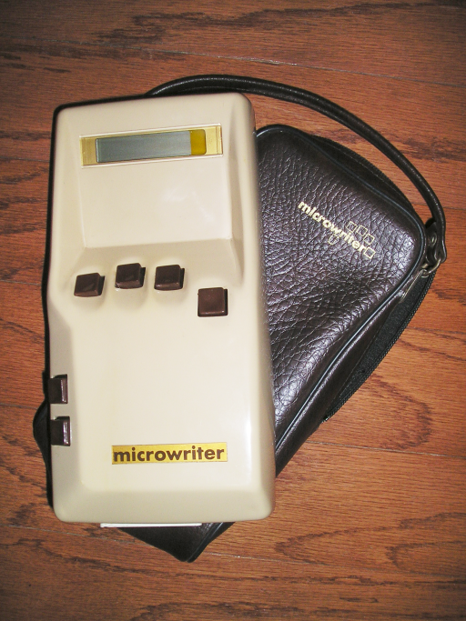
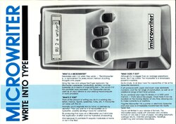
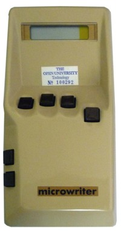

Microwriter
Five-key chorded portable word processor.

Overview
The Microwriter is a pioneering hand-held word processor with a one-handed chording keyboard, designed to let mobile professionals take notes without a desk. Invented by film director Cy Endfield and engineer Chris Rainey, it was marketed from 1980 by Microwriter Ltd. of Mitcham, Surrey, UK. The device fits in the palm of the right hand; five keys for the fingers and a side‑mounted thumb key form letter chords whose shapes mirror the written characters. This mnemonic ‘alphabet’ was claimed to reach typing speeds averaging 1.5 times that of handwriting.
The best‑known model, the MW4, features a 16‑character scrolling LCD, 8 KB of battery‑backed RAM, and an RS‑232 serial port for connecting to printers or computers. Users can edit, search, and scroll through text using chord commands, and the internal memory can hold several pages of notes. Power comes from rechargeable NiCad batteries, offering hours of continuous use.
Although it never became a mass‑market product, the Microwriter demonstrated the viability of mobile text entry long before PDAs and smartphones. Its chording approach influenced later wearable keyboards, and its descendants—the AgendA folding PDA and the CyKey PC keyboard—kept the idea alive. The device remains a significant artifact in the history of human–computer interaction and portable computing.
Deep dive
Cy Endfield, a film director best known for ‘Zulu’ and ‘Mysterious Island,’ grew frustrated with the slowness of handwriting during production and wanted a battery‑powered device for immediate note‑taking. With engineer Chris Rainey he conceived a portable word‑processor based on a chorded keyboard. The first prototype was shown at a London computer exhibition in 1978. A patent application (issued as US4442506A) described a portable word‑processor with a one‑handed chording system and a visual mnemonic scheme. In 1980 Microwriter Ltd. began selling the Microwriter MW4, targeting business executives, journalists, and students.
The MW4 unit measures roughly 230 × 130 × 25 mm (9 × 5 × 1 in) and weighs about 500 g. The casing, usually black, has a recessed keypad: five circular finger keys on top, arranged in a slight arc for the right hand, and a thumb key on the left side of the body. A 16‑character reflective liquid‑crystal display sits above the keys, showing a scrolling window into the current document. Internal storage consists of 8,000 characters of non‑volatile, battery‑backed RAM, which can be partitioned into multiple files. Power is supplied by removable, rechargeable NiCad cells. Communication is via an RS‑232 serial port for output to Epson‑compatible printers or for uploading text to a computer; an optional acoustic‑coupler modem was available for remote transmission.
The user holds the device in the right hand, with fingers resting on the five top keys and the thumb on the side key. Each letter, digit, or punctuation mark is produced by pressing a unique chord—a combination of fingers and thumb. The chords are mnemonically shaped: for example, ‘A’ is thumb + index finger, evoking the two strokes of a capital A; ‘B’ adds the middle and ring fingers to suggest the two loops of the letter. The built‑in firmware interprets chords in context, separating text‑entry mode from command mode. Chords control cursor movement, delete, insert, block operations, and file management. A printed learning guide claimed that most users could reach 30 words per minute after 3–6 hours of practice. Editing is performed on a small window; the text scrolls as the cursor moves. Completed documents can be transferred word‑for‑word or as ASCII codes via the serial port.
Microwriter Ltd. launched the MW4 at a price of about £200–£300 in the early 1980s, but sales remained modest against the growing tide of portable electronic typewriters and early laptop computers. In 1984 the company introduced the AgendA, a folding PDA that combined a full QWERTY keyboard with Microwriter chording pads on the inside surfaces. The company dissolved later that decade. Chris Rainey then founded a new venture that produced the CyKey—a compact chording keyboard for PCs that preserved the Microwriter mnemonic scheme—and marketed it into the 1990s. Original Microwriter units are now held in several museum collections.
Although not a commercial blockbuster, the Microwriter is a landmark in the history of mobile text entry. It preceded the one‑handed Twiddler keyboard by more than a decade and demonstrated that chorded input, combined with a mnemonic alphabet, could be learned quickly and used effectively while standing or walking. It is frequently cited in human–computer interaction research as an early example of a wearable word‑processor. The idea lived on through the AgendA and CyKey, and a community of enthusiasts has even created modern emulators. The device’s design philosophy—one‑handed, shape‑based chord mapping—continues to inform research on alternative keyboards and text‑entry methods.
Team & pioneers
- Cy Endfield. Inventor, film director; conceived the idea and co‑designed the chording system.
- Chris Rainey. Co‑inventor, engineer; responsible for the electronic and firmware design.
- Microwriter Ltd.. Company based in Mitcham, Surrey, UK; manufactured and marketed the Microwriter.
Media

